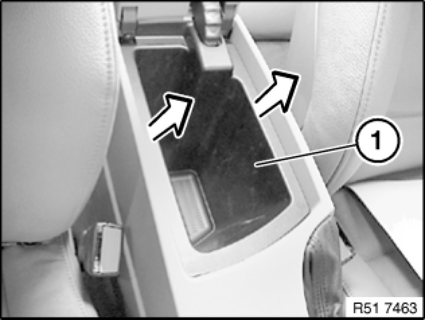
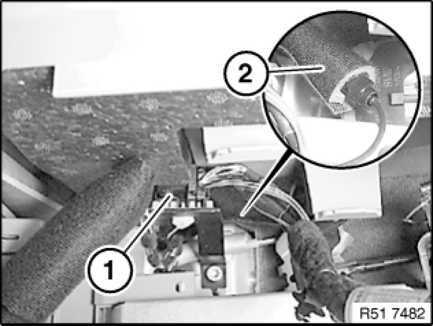
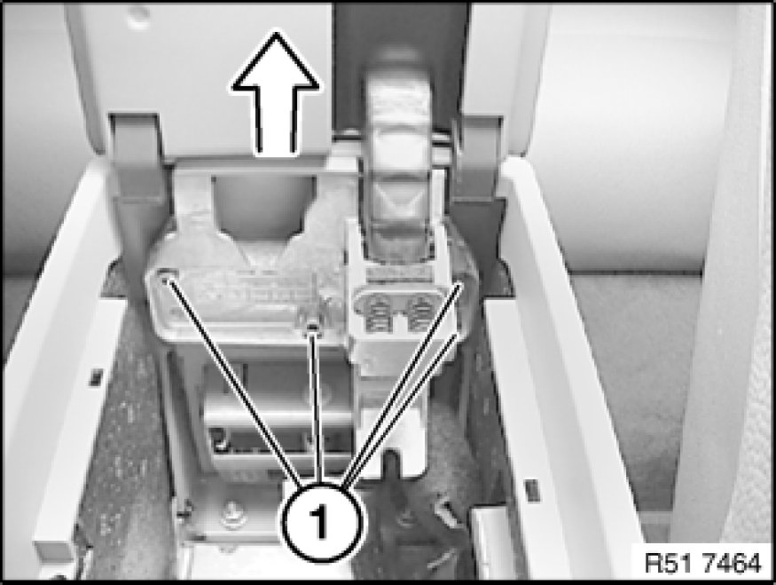
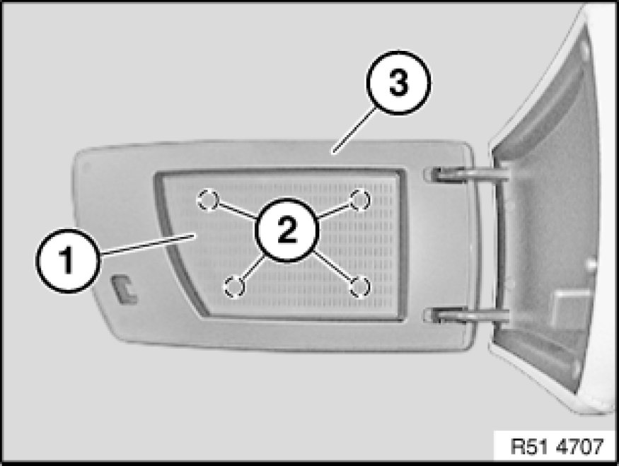
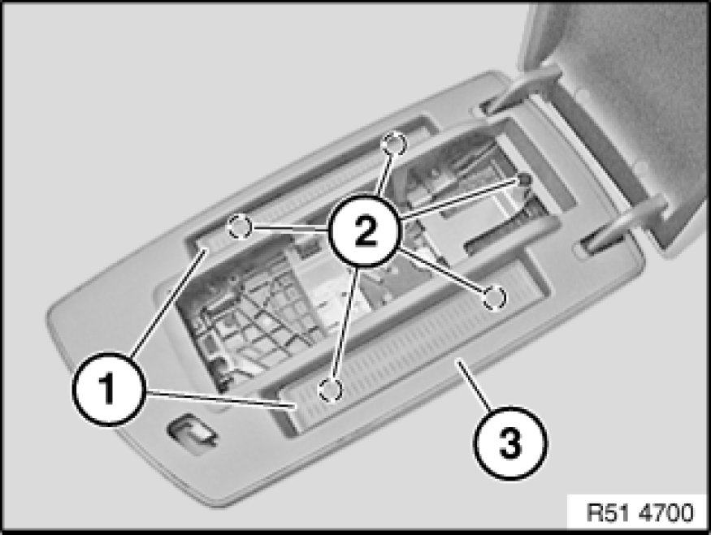

51 16 196 - Removing and installing/replacing cover for center armrest
51 16 196 - Removing and installing/replacing cover for center armrest

Note:
On version with CD changer, operation is described in:
Removing and installing/replacing cover for center armrest 51 16 ... - Removing and installing/replacing cover for center armrest (storage compartment with CD changer) (storage compartment with CD changer).

Open cover for center armrest.
Lift out storage compartment (1).

Version with telephone:
Disconnect plug connection (1).
Release protective sleeve (2) and disconnect plug connection underneath.

Release screws (1).
Remove cover (2) towards top.

Replacement (version without telephone):
Remove insert (1) and release screws (2) underneath.
Unclip trim (3) towards top.

Replacement (version with telephone):
Remove eject box Removing and Installing/Replacing Eject Box.
Remove insert (1) and release screws (2).
Unclip trim (3) towards top.